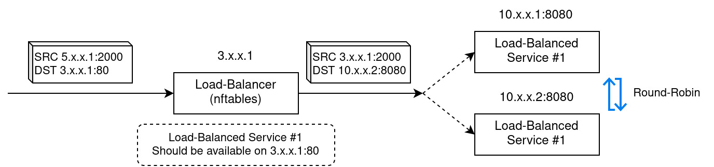

NFTables
The generation of the nftables config is one of the most important parts for making lbaas work. The nftables reference can be found here.
This document describes which nftables tables and chains are used to insert the load-balancing rules.
NAT Table
The NAT table specified in nat-table-name (config), is used to configure NAT rules.

The image shows an example scenario where DNAT and SNAT is used.
Destination NAT (nat-prerouting-chain)
DNAT is used to do the actual load-balancing. An incoming packet is checked for it's destination address and port. If both match a load-balanced address and port, the destination address and port is NATed to the target service.
As shown in the image above, the example service should be available on it's load-balancer IP-address 3.x.x.1 on port 80.
The load-balancer with nftables changes the destination of the packet to one of the available endpoints using the
round-robin method. The new destination address is 10.x.x.2 with port 8080.
This is achieved by adding the following nftables rules in the nat-prerouting-chain:
ip daddr 3.x.x.1 tcp dport 80 meta mark set 0x00000001 ct mark set meta mark dnat to numgen inc mod 2 map { 0 : 10.x.x.1, 1 : 10.x.x.2 }:80
This lines does:
- Only apply for packets with matching TCP destination address and port (
ip daddr 3.x.x.1 tcp dport 80) - Set a mark for the nftables flow (
meta mark set 0x00000001) also saves this mark in the conntrack information (ct mark set meta mark) - Execute DNAT with an incrementing number generator modulo the number of targets pointing to a map of targets (
dnat to numgen inc mod 2 map { 0 : 10.x.x.1, 1 : 10.x.x.2 }:80) -> Effectively, this is round-robin
Source NAT (nat-postrouting-chain)
When the load-balancer is also the default-gateway, the responses automatically come back to the load-balancer, where the DNAT is reversed. But if that is not the case, we also need to do SNAT, so that the load-balanced service endpoint sends the response to the load-balancer first, instead directly to the original sender.
In the image above, this can be seen in the packet that the load-balancer sends to the load-balanced service.
The source in this step changed from the original 5.x.x.1:2000 to 3.x.x.1:2000.
The corresponding nftables rule in the nat-postrouting-chain for this is:
meta mark 0x00000001 masquerade
The mark that we set in the DNAT/prerouting step is now used to enable masquerade SNAT for these packets.
Filter Table
Rules and chains in the filter-table-name are used for two task:
- Allowing packet flows with the
0x00000001mark (the flows that match a load-balancing rule) - Enforcing network policies
The entrypoint for all our rules is filter-forward-chain. In this chain we add two types of rules (in this order):
-
gotorules for all network policies:Example:
ct mark 0x00000001 ip daddr 10.x.x.1 goto POD-10.x.x.1In this case, there is a network policy for the pod with address
10.x.x.1. The contents of the policy are enforced in the chain with the namePOD-10.x.x.1, that is also being created, together with some further (sub-)chains. -
A "catch-all" accept rule for all other packet flows that do not have a network-policy:
ct mark 0x00000001 accept
In both rules, we check for the mark ct mark 0x00000001 accept to identify flows that belong to a load-balancing rule.